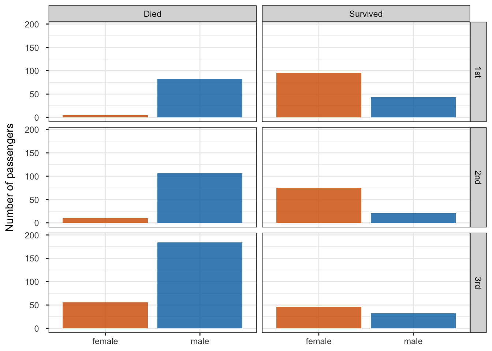
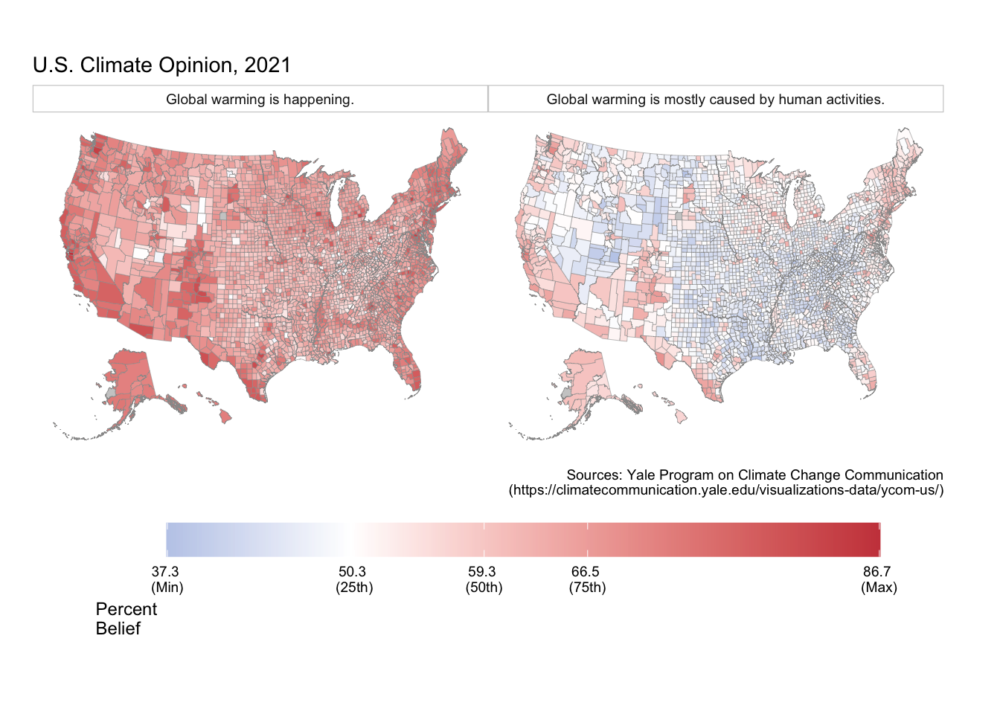
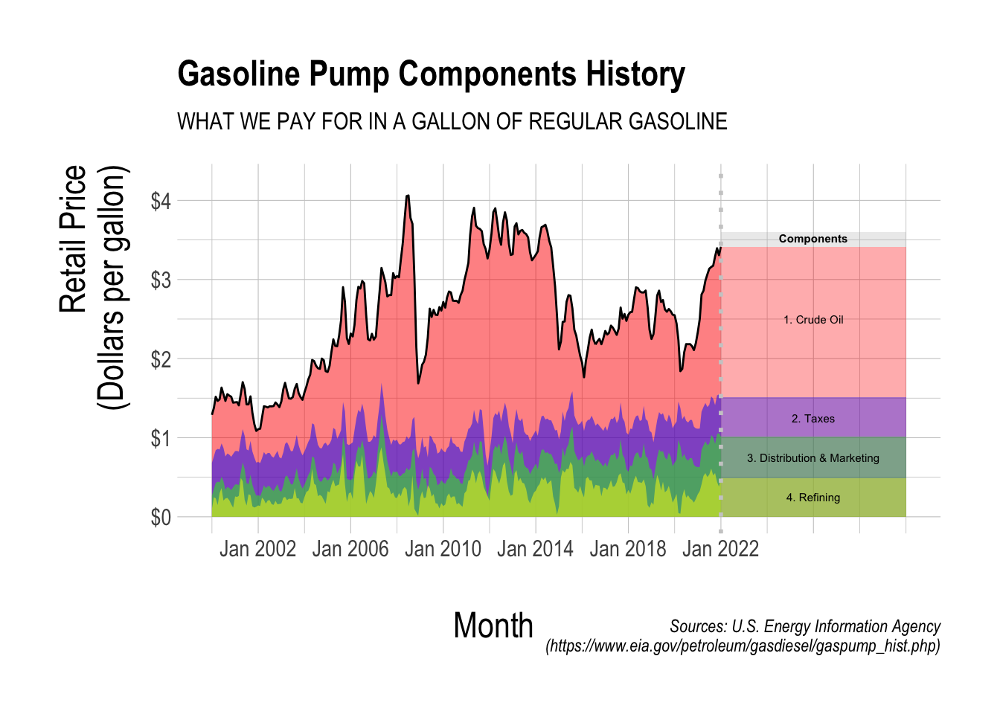
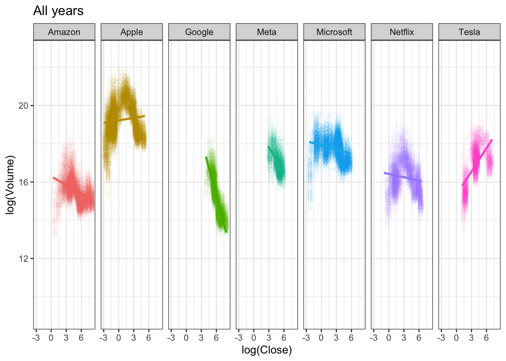
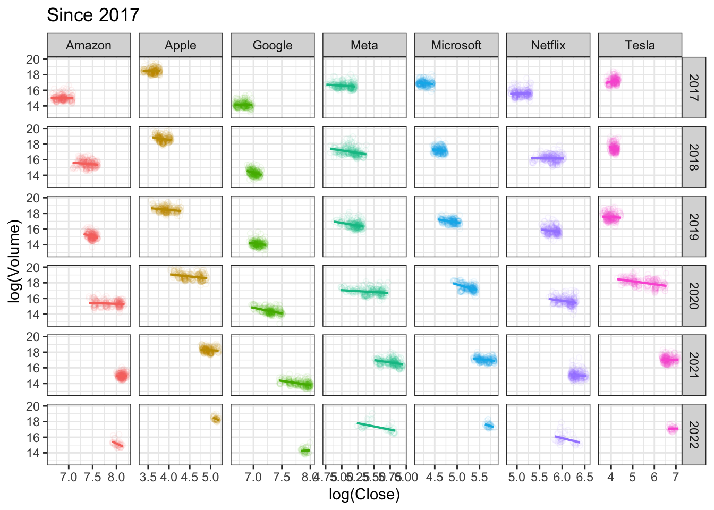

ggplot# install.packages("hrbrthemes")
library(tidyverse)
library(socviz)
library(lubridate)
library(hrbrthemes)
library(ggthemes)titanic <- read_csv(
'https://bcdanl.github.io/data/titanic_cleaned.csv')
titanic <- titanic %>%
mutate(surv = ifelse(survived == 0, "Died", "Survived"))
ggplot(data = titanic,
aes(x = sex, fill = sex)) +
geom_bar() +
facet_grid(class ~ surv) +
scale_x_discrete(name = NULL) +
scale_y_continuous(limits = c(0, 195)) +
scale_fill_manual(values = c("#D55E00D0", "#0072B2D0"),
guide = "none") +
theme_bw() +
theme(axis.text.y = element_text(margin = margin(7, 7, 7, 7))) +
labs( y = "Number of passengers")
climate_opinion_long <- read_csv(
'https://bcdanl.github.io/data/climate_opinion_2021.csv')
# Use `county_map` data from the `socviz` package.
# Do not use coord_map().
### Variable description
# happening: Estimated % of adults who think global warming is happening in 2021.
# human: Estimated % of adults who think global warming is mostly caused by human activities in 2021
county_map <- county_map
county_map$id <- as.integer(county_map$id)
county_full <- left_join(county_map, climate_opinion_long)
na_map <- function(yr){
county_full_na <- filter(county_full, is.na(belief)) %>%
select(-belief) %>%
mutate( belief = yr)
}
for (val in levels( factor(county_full$belief) ) ){
county_full <- rbind(county_full, na_map(val))
}
county_full <- county_full %>%
mutate(belief_desc = ifelse(belief == "happening",
"Global warming is happening.",
"Global warming is mostly caused by human activities."))
p1 <- ggplot(data = filter(county_full, !is.na(belief))) +
geom_polygon(mapping = aes(x = long, y = lat,
group = group, fill = perc ),
color = "grey60", size = 0.1)
p2 <- p1 + scale_fill_gradient2(
low = '#2E74C0',
high = '#CB454A',
mid = 'white', # transparent white
na.value = "grey80",
midpoint = 50,
breaks = c(quantile(county_full$perc, 0, na.rm = T),
quantile(county_full$perc, .25, na.rm = T),
quantile(county_full$perc, .5, na.rm = T),
quantile(county_full$perc, .75, na.rm = T),
quantile(county_full$perc, 1, na.rm = T)),
labels = c(paste(round(quantile(county_full$perc, 0, na.rm = T), 1),"\n(Min)"),
paste(round(quantile(county_full$perc, .25, na.rm = T), 1),"\n(25th)"),
paste(round(quantile(county_full$perc, .5, na.rm = T), 1),"\n(50th)"),
paste(round(quantile(county_full$perc, .75, na.rm = T), 1),"\n(75th)"),
paste(round(quantile(county_full$perc, 1, na.rm = T), 1),"\n(Max)")
),
guide = guide_colorbar( direction = "horizontal",
barwidth = 25,
title.vjust = 1 )
)
p <- p2 + labs(fill = "Percent\nBelief", title = "U.S. Climate Opinion, 2021",
caption = "Sources: Yale Program on Climate Change Communication\n(https://climatecommunication.yale.edu/visualizations-data/ycom-us/)") +
theme_map() +
facet_wrap(.~ belief_desc) +
theme(plot.margin = unit( c(1, 1, 3.85, 0.5), "cm"),
legend.position = c(.5, -.3),
legend.justification = c(.5,.5),
strip.background = element_rect( colour = "black",
fill = "white",
color = "grey80" )
) +
guides(fill = guide_colourbar(direction = "horizontal", barwidth = 25, title.vjust = -1))
p
eia_table <- read_csv(
'https://bcdanl.github.io/data/table_eia_20220309.csv')
eia_table <- eia_table[,-1]
### Variable description
# mon_yr: monthly time (from January 2000 to January 2022)
# retail_price: retail price of regular gasoline (US dollars per gallon)
# refining: percentage of refining on retail_price
# dist_mkt: percentage of distribution and marketing on retail_price
# taxes: percentage of taxes on retail_price
# crude_oil: percentage of crude oil on retail_price
###############################################################################
eia_table <- eia_table %>%
mutate(refining_incidence = refining * retail_price * .01,
dist_mkt_incidence = dist_mkt * retail_price * .01,
taxes_incidence = taxes * retail_price * .01,
crude_oil_incidence = crude_oil * retail_price * .01,
dist_mkt_incidence = dist_mkt_incidence + refining_incidence,
taxes_incidence = taxes_incidence + dist_mkt_incidence,
crude_oil_incidence = crude_oil_incidence + taxes_incidence)
eia_table$mon_yr <- my(eia_table$mon_yr)
ggplot(eia_table) +
geom_area(aes(x = mon_yr, y = crude_oil_incidence),
fill = "red", alpha = 0.5) +
geom_area(aes(x = mon_yr, y = taxes_incidence),
fill = "blue", alpha = 0.5) +
geom_area(aes(x = mon_yr, y = dist_mkt_incidence),
fill = "green", alpha = 0.5) +
geom_area(aes(x = mon_yr, y = refining_incidence),
fill = "yellow", alpha = 0.5) +
geom_line(aes(x = mon_yr, y = retail_price),
alpha = 1) +
annotate(geom = "rect",
xmin = ymd("2022-01-01"), xmax = ymd("2030-01-01"),
ymin = 0,
ymax = eia_table$crude_oil_incidence[265],
fill = "red", alpha = .33) +
annotate(geom = "rect",
xmin = ymd("2022-01-01"), xmax = ymd("2030-01-01"),
ymin = 0,
ymax = eia_table$taxes_incidence[265],
fill = "blue", alpha = .33) +
annotate(geom = "rect",
xmin = ymd("2022-01-01"), xmax = ymd("2030-01-01"),
ymin = 0,
ymax = eia_table$dist_mkt_incidence[265],
fill = "green", alpha = .33) +
annotate(geom = "rect",
xmin = ymd("2022-01-01"), xmax = ymd("2030-01-01"),
ymin =0,
ymax = eia_table$refining_incidence[265],
fill = "yellow", alpha = .33) +
annotate(geom = "rect",
xmin = ymd("2022-01-01"), xmax = ymd("2030-01-01"),
ymin = eia_table$crude_oil_incidence[265],
ymax = 3.6,
fill = "grey70", alpha = .25) +
annotate(geom = "text", x = ymd("2026-01-01"), y = 2.5,
label = "1. Crude Oil", hjust = .5, size = rel(2)) +
annotate(geom = "text", x = ymd("2026-01-01"), y = 1.25,
label = "2. Taxes", hjust = .5, size = rel(2)) +
annotate(geom = "text", x = ymd("2026-01-01"), y = .75,
label = "3. Distribution & Marketing", hjust = .5, size = rel(2)) +
annotate(geom = "text", x = ymd("2026-01-01"), y = .25,
label = "4. Refining", hjust = .5, size = rel(2)) +
annotate(geom = "text", x = ymd("2026-01-01"), y = 3.52,
label = "Components", hjust = .5, size = rel(2), fontface =2) +
geom_vline(aes(xintercept = ymd("2022-01-01")),
color = "grey80", linetype = 3, size = 1) +
theme_ipsum() +
ggtitle("Gasoline Pump Components History",
subtitle = "WHAT WE PAY FOR IN A GALLON OF REGULAR GASOLINE") +
labs( x = "Month", y= "Retail Price\n(Dollars per gallon)",
caption = "Sources: U.S. Energy Information Agency\n(https://www.eia.gov/petroleum/gasdiesel/gaspump_hist.php)") +
xlim(ymd(c("2001-01-01", "2030-01-01"))) +
scale_y_continuous(labels = scales::dollar,
limits = c(0,4.25)) +
scale_x_date(breaks = ymd(c("2002-01-01", "2006-01-01","2010-01-01", "2014-01-01", "2018-01-01", "2022-01-01", "2026-01-01")),
labels = c("Jan 2002", "Jan 2006", "Jan 2010",
"Jan 2014", "Jan 2018", "Jan 2022", "")) +
theme(axis.title.x = element_text(size = rel(2), hjust = .405, vjust = -5),
axis.title.y = element_text(size = rel(2), margin =
margin(10,10,10,0)))
Describe the relationship between trading volume and stock price for the largest IT companies in the world.
Did the relationship vary by companies and by the time periods?
Feel free to use the filter() function to restrict observations for your plots.
tech_stock_trading <- read_csv(
'https://bcdanl.github.io/data/tech_stock_trading.csv')
# from year 2017
tech_stock_trading2 <- tech_stock_trading %>%
filter(Date >= ymd("2017-01-01")) %>%
mutate(year = year(Date))
# all years
p0 <- ggplot(tech_stock_trading ,
aes(x = log(Close), y = log(Volume),
color = company) )
p0 + geom_point(alpha = .05,
shape = 1) + geom_smooth(method = lm) +
facet_grid(.~company) +
theme_minimal()+
labs(title = "All years") +
theme_bw() +
guides(color = "none")
# since 2017
p0 <- ggplot(tech_stock_trading2 ,
aes(x = log(Close), y = log(Volume),
color = company) )
p0 + geom_point(alpha = .075,
shape = 1) +
geom_smooth(method = lm, se = F, size = .75) +
facet_grid(year~company, scales = "free_x") +
labs(title = "Since 2017") +
theme_bw() +
guides(color = "none")
References for this homework are